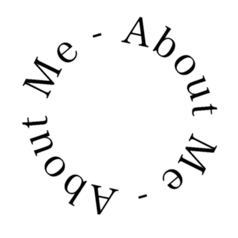

About
Skills
Works

Takaki Hashimoto
Takaki Hashimoto
橋本 卓樹 - Takaki Hashimoto
ダミーテキストダミーテキストダミーテキストダミーテキストダミーテキストダミーテキストダミーテキスト ダミーテキストダミーテキストダミーテキストダミーテキストダミーテキストダミーテキストダミーテキスト ダミーテキストダミーテキストダミーテキストダミーテキストダミーテキストダミーテキストダミーテキスト ダミーテキストダミーテキストダミーテキスト
Trajectory
今日まで
Takaki.H
1994.01
文字より数字が好きだった幼少期
北海道札幌市に生まれる。算数が好きで文字より数字が好きであることに気付く。 本は一切読まず、車のナンバープレートで数遊びをするのがいつしか癖に。
2006.04
努力を学んだ少年サッカー時代
年少の頃からサッカーを始め、小学4年 ~ 中学3年間はクラブチームでプレー。 厳しい環境下で、努力し続けることの難しさとその価値を知る。
2009.04
教える楽しさを知った中高時代
文武両道を掲げ、勉学にも精力する。人に教えることで己の学びが深まる実感を持つとともに、 説明してわかってもらえたときの満足感と喜びを知る。
2012.04
得意分野を突き詰めた大学時代
北海道教育大学数学教育専攻へ入学。幼少期から好きであった数についての理解を深めながら、 教育学についても一から学び、各種教員免許状を取得。
2016.04
高校数学教諭・教室長として就職
自身の特性を生かせる職を経験する。日々を教育の世界で過ごしていく中で、 度々耳にすることが多くなった「プログラミング」というものに興味を持つ。
2023.08
プログラミングの勉強を始める
未知のモノを学んでみたいという知的好奇心からプログラミングについて調べる。 北関東学院へ入学し、本格的にフロントエンドの学習を始める。
Strength
私の強み
Curious mind
Efficiency
Communication
(01)
Curious mind
何事に対しても半端な理解で終わるのではなく、 自分のものとしてきちんと理解し、極めたいという強い気持ちがあります。 学びを得る過程で、追究するための努力を惜しみません。 これまでも与えられた役割のためであれば、 その分野を徹底的に研究し望ましい成果をあげてきました。 人一倍強い知的好奇心をもとに、自分自身をアップデートし、 貪欲に取り組み続けることができます。
(02)
Efficiency
日頃から効率を意識して行動するようにしています。 ゴールまでの道筋を予めを複数通り考え、 その中から最効率な物を選んだ行動ができます。 仕事においても作業効率を上げ、より多くの役割を果たすことで、 企業への貢献を果たしていきたいと考えています。 また、コードにおいても効率を意識し、 誰が見てもわかりやすく、無駄のないものを記述するよう心がけています。
(03)
Communication
コミュニケーションの場において、相手のことを正しく理解し、 良好な関係づくりができます。前職では生徒やお客様と接する際、 「相手が本当に求めていること・伝えたいこと」を察して理解し、 それを解決できるよう、相手に寄り添った対話を心がけてきました。 この経験で培ってきた能力を活かし、 クライアントさまや職場のメンバーとの円滑なコミュニケーションを 図ることができます。